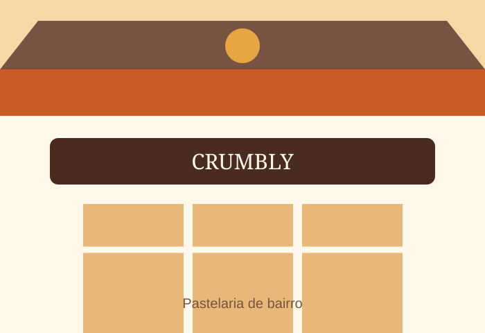

Uma história com sabor
Sobre a pastelaria
Um lugar de bairro onde a tradição encontra a vontade de fazer melhor.
Da primeira fornada até hoje
A Pastelaria Pão Quente nasceu, numa história fictícia, em 1987, quando a Dona Amélia abriu uma pequena padaria com um forno e muitas receitas de família.
Com o passar dos anos, o espaço cresceu, mas manteve a mesma vontade: receber cada pessoa com simpatia e servir produtos acabados de fazer.
O que nos orienta
- Respeito pelo tempo das receitas tradicionais.
- Ingredientes simples e selecionados.
- Um atendimento próximo e genuíno.
Venha visitar-nos
Horário e localização
Rua de Fernandes Tomás, 3504000-216 Porto
Portugal
Segunda a sábado: 07:00–19:00
Domingo: encerrado
